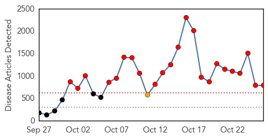
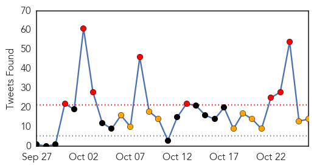

Ebola
30-Day Web Trend
23 alerts, 1 warnings

30-Day Twitter Trend
8 alerts, 10 warnings

Article Locations

Article Confidences

Top Articles:
- 1.000
- WHO says confirmed Ebola cases now more than 10,000 as Obama meets patient
- 1.000
- WHO says confirmed Ebola cases now more than 10,000 as Obama meets patient
- 1.000
- Poor health systems in Asia cause for Ebola epidemic alarm
- 1.000
- WHO: Number of Ebola-linked cases passes 10,000
- 1.000
- WHO eyes mass Ebola vaccines by mid-2015
- 1.000
- Ebola: the race to find a vaccine
- 1.000
- Why Asia Could Be the Next Ebola Hotbed
- 1.000
- World struggles to contain Ebola
- 1.000
- Gujarat fever fight yields Ebola lessons
- 1.000
- Who gets it Republican American
- 1.000
- In Liberia, Firestone is spreading hope
- 1.000
- New York, New Jersey to Quarantine All Travelers With Ebola Contacts
- 1.000
- Federal Government Pressures New York, New Jersey Governors to Rescind Quarantine Measures
- 1.000
- North Platte Nebraska's favorite newspaper
- 1.000
- Ebola Panic as 10,000 Fall Sick
- 1.000
- 5-Year-Old Bronx Boy With Fever Tests Negative for Ebola: Officials
- 1.000
- 5-Year-Old Bronx Boy With Fever Tests Negative for Ebola: Officials
- 1.000
- 5-Year-Old Bronx Boy With Fever Tests Negative for Ebola: Officials
- 1.000
- 5-Year-Old Bronx Boy With Fever Tests Negative for Ebola: Officials
- 1.000
- Treating both symptoms, root causes to fight Ebola
- 1.000
- WHO: 10,000 new Ebola cases per week could be seen
- 1.000
- WHO: Number Of Ebola-Linked Cases Passes 10,000
- 1.000
- Poor health systems in some Asia countries cause for alarm over Ebola
- 1.000
- Ebola outbreak: Teenager in Australia being tested for disease after developing fever
- 1.000
- What is the Ebola Virus: How many people will be infected
- 1.000
- Ebola pandemic: Virus cases top 10,000 as death toll nears 5,000, WHO reports
- 1.000
- Ebola in Dallas: Stories, videos, photos, graphics and resources from The Dallas Morning News
- 1.000
- Putting Ebola in perspective
- 1.000
- An Endemic Effort -- Beijing Review
- 1.000
- After testing negative for virus, quarantined nurse criticizes ‘frenzy of disorganization’;
- 1.000
- Poor health systems in Asia cause for Ebola alarm
- 1.000
- Latest News & Gossip on Popular Trends at India.com
- 1.000
- Stamford-Based AmeriCares Sends First Ebola Aid Shipment To Guinea
- 1.000
- Poor health systems in Asia cause for Ebola alarm
- 1.000
- WHO: Mali case put many at risk for Ebola
- 1.000
- Poor health systems in Asia cause for Ebola alarm
- 1.000
- Radnor police will be prepared for unlikely Ebola outbreak
- 1.000
- How prepared is India against Ebola : India, News
- 1.000
- Poor health systems make Asia vulnerable to Ebola peril
- 1.000
- New York official: New Ebola policy ‘a real stunner’
- 1.000
- Health experts urge steps to fight flu; it's more likely you'll get that than Ebola
- 1.000
- Arkansas Department of Health continues to provide Ebola guidance training to health care facilities
- 1.000
- Obama Promotes Spread of Ebola in U.S.
- 1.000
- 5-year-old at Bellevue leaving isolation
- 1.000
- 5-year-old at Bellevue leaving isolation
- 1.000
- 5-year-old at Bellevue leaving isolation
- 1.000
- 5-year-old at Bellevue leaving isolation
- 1.000
- 5-year-old at Bellevue leaving isolation
- 1.000
- 5-year-old at Bellevue leaving isolation
- 1.000
- 5-year-old at Bellevue leaving isolation
Showing top 50 articles...
Top Tweets:
- 0.970
- You have to be sick with Ebola first. After a person has recovered, Ebola virus has been found in semen for up to 3 months. 1/2
- 0.949
- RT: PLoS Currents Outbreaks: Phylodynamic Analysis of Ebola Virus in the 2014 Sierra Leone Epidemic http://t.co/R7UQxvp1Fx
- 0.891
- RT: Finding Visible Hope Amid Ebola's Invisible Danger: Ben Solomon has been making videos about the Ebola outbrea... http…
- 0.837
- RT: EBOLA : elles dansent pour lutter contre le virus ShakeEbolaOff http://t.co/97KnkIFSLF
- 0.813
- If you are asking how you get Ebola - through direct contact with the bodily fluids of someone sick with Ebola.
- 0.806
- Nurse Under Ebola Quarantine Criticizes Her Treatment http://t.co/pv2oUzaEGV
- 0.804
- There are no simple fixes to the Ebola outbreak. @fastcoexist on how FightingEbola could help: http://t.co/Bb54dyQwYw OpenIDEO
- 0.803
- RT: If Ebola virus affected dogs, people would respond generously by giving. Dying Africans? Not so much http://…
- 0.797
- : There is no evidence that mosquitoes or other insects can transmit Ebola virus. http://t.co/UOMbii8pas
- 0.783
- RT: FRANCE 24 : EBOLA : elles dansent pour lutter contre le virus ShakeEbolaOff. http://t.co/LZT0gESy2U
- 0.756
- RT: EBOLA : elles dansent pour lutter contre le virus ShakeEbolaOff: http://t.co/iWVPQXBw2Z via
- 0.755
- RT: Until there is a vaccine, limiting the spread of Ebola depends on education and behavior change. http://t.co/ppBBDVbORi
- 0.726
- Today's EbolaFact: the species of Ebola in W. Africa outbreak is Zaire ebolavirus. http://t.co/uG5OioCnKe
- 0.723
- RT: Ebola is no longer a West African issue or a Sierra Leone, Guinea or Liberia issue. It is a global issue. Lend a hand, suppor…
- 0.702
- RT: Now available: free HumanitarianData tables for the Ebola outbreak http://t.co/ADyXLF9697 opendata ebolaresponse via…
- 0.702
- Know the facts: Ebola is not like the flu. TackleEbola FactsNotFear http://t.co/9rGICsuDeq
- 0.698
- RT: As West Africa watches it's people die, little Liberia calls for urgent action on Ebola http://t.c…
- 0.675
- RT: Today's EbolaFact: the species of Ebola in W. Africa outbreak is Zaire ebolavirus. http://t.co/uG5OioCnKe
- 0.675
- Best approach to minimize global risks is to control the Ebola outbreak at its source - @IRINnews on EbolaResponse http://t.co/CNmnBYfgUO
- 0.668
- No. Coughing and sneezing are not common symptoms of Ebola.
- 0.636
- Ebola outbreak: US nurse criticises quarantine treatment http://t.co/BwDCbstKEY TackleEbola http://t.co/aHKV6V2IXJ
- 0.617
- We pray for people with other medical conditions affecting the Ebola hit regions. May God help them.
- 0.574
- RT: "Patients can beat this disease. We can beat this disease. But we have to stay vigilant." —President Obama on Ebola: http:…
- 0.564
- RT: Clinical trials of possible Ebola vaccine underway in U.S. Read more: http://t.co/ciLv8tM2kc http://t.co/7phAfxVbv0
- 0.544
- We pray for Africa as a continent fighting against Ebola. May God bless Africa and May His healing hand be upon our nations. Amen.
- 0.523
- No. A person must come in direct contact with the blood or bodily fluids of a person sick with Ebola.
- 0.505
- Ebola quarantine nurse hires civil rights lawyer http://t.co/keYrWy7nVQ
Unknown
30-Day Web Trend
0 alerts, 0 warnings
30-Day Twitter Trend
6 alerts, 0 warnings

Article Locations
Article Confidences

Top Articles:
- 0.917
- Chicago Tribune
- 0.917
- Chicago Tribune
- 0.917
- Chicago Tribune
- 0.917
- Chicago Tribune
- 0.917
- Chicago Tribune
- 0.910
- The world windows to Thailand
- 0.909
- WHO revises global tuberculosis estimate up by 500,000
- 0.883
- UN Mission for Ebola Emergency Response (UNMEER) External Situation Report, 24 October 2014 - Liberia
- 0.867
- Enterovirus D68 Confirmed in Santa Barbara
- 0.866
- Ukraine president to start talks on parliamentary coalition on Monday
- 0.866
- Iraq Kurds will not engage in direct combat in Kobani, to provide artillery support-officials
- 0.866
- State quarantines are due to "absence of federal leadership"- Republican lawmaker
- 0.866
- Taxiing German plane clips control tower in Algeria, no injuries
- 0.706
- Guest Column: Don't reject more than a half-century of improved health
- 0.615
- "Despite All the Risks, We Are Still Committed" - Central African Republic
- 0.542
- 145 Suffer Eye Injuries During Diwali
- 0.518
- Christie Defends Ebola Quarantine: Public Safety Is ‘Government’s Job’
- 0.513
- Health software brings risk of death
- 0.507
- DA slams plans to spend R1m on photos
Top Tweets:
- 0.591
- If you are asking what the first symptoms are, typically a fever. Read more about symptoms: http://t.co/4vkQoW2qqg
- 0.561
- KSA reports 2 new MERS cases & 2 deaths. One of the new cases is a healthcare worker - possible hospital spread. http://t.co/swZzsYBxUo